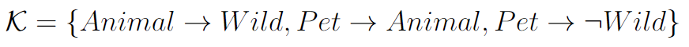
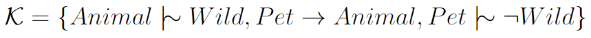
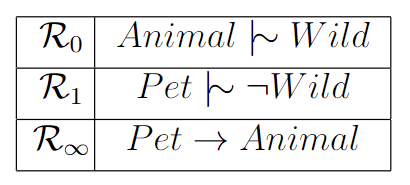
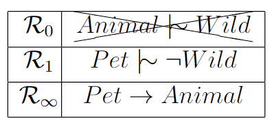

Defeasible Reasoning
Classical reasoning can pose limitations as it struggles to effectively represent statements that typically hold true but may have occasional exceptions. For instance, when we aim for a more precise model of pets, we might incorporate the statement 'pets are not wild' into the knowledge base:  Given the conflicting inferences that arise, such as the conclusion that 'pets are wild' and that 'pets are not wild', which is inherently contradictory, classical reasoning leads to the untenable assertion that pets cannot exist. In essence, it undermines our capacity to engage in meaningful reasoning about pets. What we truly intend to convey is that 'animals are typically wild', and then specify that pets represent a distinct category of animals that do not fall into the wild category. Defeasible reasoning offers a way to handle this inherent uncertainty, enabling a more precise description of pets:  Kraus, Lehmann, and Magidor introduced the KLM approach for defeasible reasoning, characterized by a set of declarative properties. Our attention is directed toward the KLM extension applied to propositional logic. Just as classical entailment facilitated inferences from classical knowledge, concepts of defeasible entailment empower us to engage in reasoning concerning defeasible knowledge. Among these, the most elementary and widely recognized notion within the KLM framework is Rational Closure.
In a straightforward manner, Rational Closure attains defeasible reasoning by establishing a hierarchy of statements based on their typicality. General statements are assigned lower ranks, while specific statements receive higher ranks. This process can be envisioned as dividing the knowledge base into distinct levels:  Considering that pets represent a unique and exceptional subset within the category of birds, statements pertaining to pets hold a higher ranking than those related to animals. Classical, unequivocal information is assigned a distinct rank, represented as ∞. This ranking scheme allows us to deduce conclusions by progressively discarding the statements with the lowest rank until classical contradictions no longer exist. For instance, given that the entire knowledge base categorically suggests that pets cannot exist, we eliminate the lowest-ranked statements when engaging in reasoning about pets.  With the absence of any lingering classical inconsistencies concerning pets, we can employ classical reasoning on the remaining statements to engage in defeasible reasoning regarding pets.
While it may not be immediately apparent from this context, Rational Closure characterizes a rather cautious approach to reasoning, as it frequently discards more information than required. In contrast, Relevant and Lexicographic Closure are two distinct methods that share similar principles but are designed to preserve a greater amount of information, resulting in a less cautious form of reasoning.